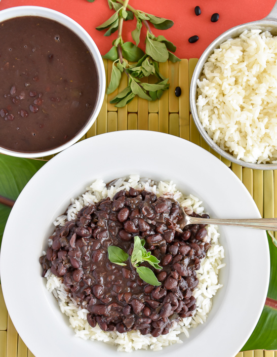

Cuban Black Beans

Ingredients
- 1 pound (450g) dried black beans, preferably turtle beans
- 2 small ham hocks, about 1 1/4 pounds (get smoked ones, if you can)
- 1/2 cup extra-virgin olive oil
- 3 1/2 cups finely chopped yellow onions
- 1 1/2 cups chopped green bell peppers
- 2 tablespoons finely minced garlic
- 2 bay leaves
- 1/4 teaspoon dried hot red-pepper flakes
- 3 tablespoons (45ml) white wine vinegar, plus more for white onions
- Kosher salt and freshly ground black pepper
- 2 large white onions, diced
- 1 teaspoon sugar
- 1/2 (120ml) cup dark rum
- 1/4 teaspoon cayenne pepper
- 1/4 teaspoon Tabasco sauce
- Cooked long-grain white rice, for serving
- Diced white onions seasoned with salt, a touch of sugar, and splash of vinegar, for serving (optional)
Directions
- In a large bowl, cover the beans with at least 3 inches cold water. Cover and let stand overnight.
- Drain the beans, reserving the water in which they soaked. Measure the water and add enough additional water to total 8 cups.
- In a Dutch oven, combine beans, 8 cups water, and ham hocks and bring to a boil over high heat. Reduce heat to low and cook, uncovered, stirring occasionally and skimming the surface as necessary to remove any foam, until beans are very tender, about 4 hours. Top up with boiling water as needed to keep the beans from going dry.
- Meanwhile, in a large skillet, heat oil over medium heat until shimmering. Add chopped onions and green peppers. Cook, stirring, until the mixture is wilted, about 5 minutes. Add the garlic and cook, stirring often, until fragrant, about 1 minute. Remove from heat.
- After the beans have cooked about 2 hours, add the onion mixture to the beans. Add the bay leaves, pepper flakes, and vinegar. Season with salt and pepper.
- When the beans are almost tender, add rum and cook, stirring and scraping bottom often, 30 minutes longer. The beans should have thickened nicely, being neither dry nor soupy.
- Remove the ham hocks. When they are cool enough to handle, remove and discard the skin, fat, bones and gristle. Shred the meat and return it to the beans. Remove the bay leaves. Add the cayenne pepper and Tabasco. Serve with white rice and top with diced white onions, if desired.